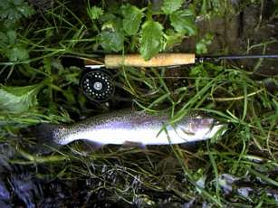
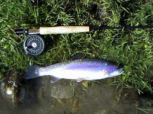
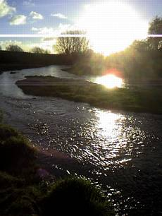

釣行日誌 ＮＺ編
真冬なり、釣りの心は冷めず
2002/07/20(SAT)
新調した４番ロッドを持っていつものスプリングクリークへ。中流部でストリーマーを引くつもりが、いつもの農場主が見あたらなかったので、上流へ移動。この区間でニンフを楽しもうと、トウモロコシ畑のはずれから川に降りる。
先月の大水のあとで川が少し変わっている。降りてすぐのポイントでは反応が無かったが、次の荒瀬のポイントで、川に立ち込んで丁寧にニンフを流していると、ククンッと当たりがあり、インジケーターが沈んだ。すかさずの合わせに続き、グングングンッという心地よい手応えが伝わってくる。
岸のエグレに潜り込もうとする鱒をいなしながら下流へ下る。すぐ近くのタルミで取り込もうとしたが、さすがにまだ弱っておらず、さらに下流に走られる。いつもの６番ロッドと較べると、やはりタメが利かないので魚に主導権を取られてしまう。結局、30mほど下がった対岸の浅瀬でランディング。38cmのレインボートラウト。産卵直後なのか、尾ビレが丸く欠けていた。ここの川には放流された鱒はいないので、産卵床を掘るときに欠けてしまったのだろう。
ドライフライも楽しいが、ニンフの釣りもとても楽しい。

少し歩いて、このあいだ大きなレインボーを釣った瀬まで来た。しつこく流してみたものの反応は 無い。いつもより増水気味なのでポイントが変わったのか。
古い木橋を越え、合流点を越え、もう一つの橋の下流でニンフを流す。ここはいつも魚が居着いているポイントだ。案の定、速い流れと淀みとが合わさるポイントでインジケーターが消し込む。ヒョイッと合わせると途端にジャンプが始まり、一発、二発、下りながら三、四、五発と、連発花火のように高いジャンプを魅せる。川底の砂利に似せて黄褐色の魚影が冬の流れを右に左にジャンプした。
先週、ランディングネットを壊してしまい、素手で取り込まなければならないので慎重になる。合流点の淀みで鱒を岸辺の草にずり上げる。コンディションの良い、ピンシャンのレインボー、32cm。

いつも同じ川の同じ区間を釣っていると、どこに魚がいるかがよく分かるようになる。そして、釣りやすいポイントでは釣れるが、難しいポイントの魚はいつも釣れない状況が続く。それでもしつこく通っていると、いつか釣りにくいポイントでも釣れるようになる。今日釣った２尾は、少々小振りだけれど、これまでは釣れなかったポイントで釣ることが出来たので、とても嬉しい。
橋の下をくぐって上流へ歩いていくと、橋桁の上が洗掘されてなかなか魅力的な深みになっている。
『こういう所にいるんだよな....』
と思って歩み出すと、やっぱり魚影が走った。40cmくらいはあったので、ちょっと悔しいが、あそこはどうやっても竿を出せないポイントなのだ。
橋の上流の一級ポイントである荒瀬には、今日も魚がいた。青白い河床の上で、体色を青白く染めて右に左に動いていたが、ニンフのプレゼンテーションが荒っぽかったので、三投目で深みに消えてしまった。大きめのインジケーターを取って、リーダーだけにして釣るべきであった。反省。
ここまでで上流部の良い区間は終わるので、車に戻り、国道から下流を攻める。牧場の採乳小屋へ車を止め、約15分ほど歩くと、広く長い瀬が広がっているお気に入りのポイントに着く。もう３時を回っており、昼御飯抜きで釣っていたのでとても空腹である。大水で、少し状況が変わってしまった瀬の流れを見ながら遅いランチとする。
夏の間はいつも魚が付いており、ドライフライで面白いように釣れた瀬の頭の淀みにニンフを流す。強い横風のせいで、４番ラインではウェイトの入った重いニンフを思うように投げられないが、我慢の釣りで何回もトライする。
ドライフライのような華麗なターンオーバーとはほど遠く、えいゃっとニンフをブン投げるようなキャストになってしまうが、なんとかニンフが思うところに届く。ピチャンという波紋、水面に浮いたインジケーターが流れ出す。そして不意の静止。
合わせとともにリーダーが水面に突き刺さり、水中のはるか見えないところで重量感が躍り閃く。ニンフの醍醐味。
冬の日暮れは早い。太陽が西に傾き、寒さが増してきたので、釣りやすいポイントだけを選んで釣り上がる。大淵の流れ込み、一投目からニンフをくわえた中型の１尾。
長いトロ瀬の最下流で、思った通り流したニンフに来た１尾。
いつもは釣れなかった早い瀬のアタマで掛けたけど外れた１尾。
カーブの流れ込みで、ニンフの逆引きにアタックした１尾。
型こそ小さいが、どれもみな、忘れがたい鱒たち。
時間がなくなってきたので、勝負の早いストリーマーに切り替える。短めのリーダーに黒いウーリーバガーを結び、ここぞというポイントを扇形に、アクションを付けながら流してゆくのだ。淵の深みには、思い切りラインを送り込んでアクションを付ける。
暗い逆光の淵で、流し込んだストリーマーをゴツンと襲い、レインボーが走る、跳ぶ、煌めく。尺に届くか？という大きさだが、増水した流れをまともに受けてのファイトだと、びっくりするくらいの力を出して引く。下流を向いて釣るストリーマーの醍醐味である。
そんなやりとりの中、ふと、背後で
「パシャッ」
というライズの音が聞こえた。冬でも水温の高いこの川なら、ドライに出ても不思議ではない。半信半疑でストリーマーを対岸の浅場に投げてリトリーブすると、来た。ゴンッという当たりとともに、重苦しい引きが二転三転して、あっけなく外れた。
『ああぁ、今のは大きかった........』
後悔したが、後の祭り。ヒットも多いがバラすのも多い。ダウンストリームの釣りの課題である。

遠く、西に沈んでゆく夕日を浴びながら帰途についた冬晴れの牧場で、牛たちが無心に草を食んでいた。
釣行日誌ＮＺ編 目次へ
サイトマップ
ホームへ
お問い合わせ